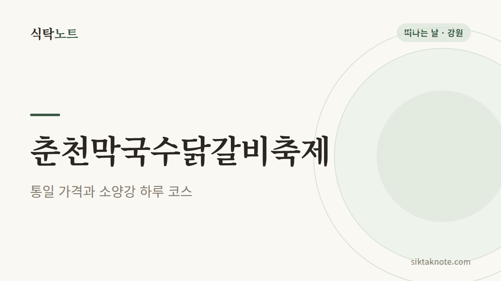
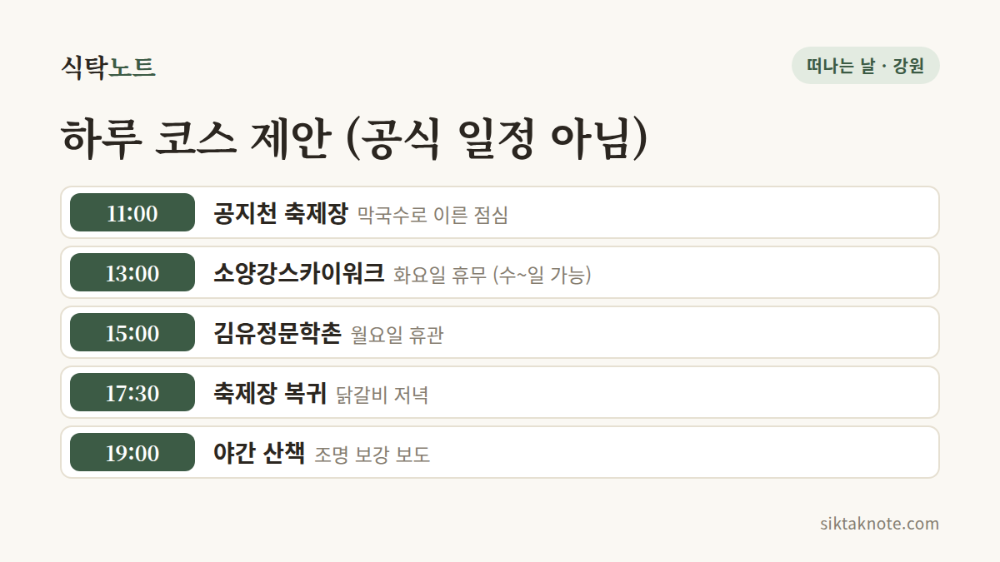

춘천막국수닭갈비축제 2026 가이드 — 통일 가격, 프로그램, 소양강 하루 코스

3줄 요약
- 2026년 10월 14일(수)부터 18일(일)까지 5일간 춘천 공지천 산책로 일대에서 열리고, 입장은 무료예요.
- 닭갈비 200g 9,900원, 막국수 6,900원으로 가격이 통일되고 QR 주문과 키오스크를 쓴다고 해요.
- 일자별 공연 시간표와 주차·셔틀은 아직 공식 사이트에 올라오지 않아서, 가기 전에 공지를 확인해야 해요.
행사 정보
- 기간
- 2026년 10월 14일(수) ~ 18일(일), 5일간
- 장소
- 춘천 공지천 산책로 일대
- 입장
- 무료 (한국관광공사 안내)
- 통일 가격
- 닭갈비(200g) 9,900원, 막국수 6,900원 (한국관광공사 안내, 언론 보도)
- 시간표
- 공식 사이트에 아직 일자별 시간표와 출연진이 올라오지 않았어요
- 문의
- 070-7576-1657
2026.10.04 확인 기준. 공식 공연 페이지는 이미지 위주라 시간을 읽지 못했어요. 운영 주체가 공지하는 소셜미디어를 확인하세요.

어떤 축제인가요
춘천막국수닭갈비축제는 춘천을 대표하는 두 음식, 막국수와 닭갈비를 주제로 하는 축제예요. 올해는 기존 4일에서 5일로 늘었고, 10월에 여는 것이 자리 잡았다고 보도되었어요. 슬로건은 "맛을 넘어 경험으로"예요.

가격이 통일돼요
가장 눈에 띄는 점은 가격이에요. 한국관광공사 안내와 업체 모집 보도에 따르면 닭갈비(200g)는 9,900원, 막국수는 6,900원으로 통일해서 판매해요. 주문은 QR 주문과 키오스크를 도입해 줄을 줄이려고 한다고 해요.
참여 업소는 닭갈비 15곳, 막국수 8곳, 로컬 F&B 25곳, 전통주 양조장 8곳이라고 보도되었어요. 공식 파트너 페이지에는 닭갈비 11곳, 막국수 8곳이 올라 있어서 숫자가 조금 달라요. 신규 업소가 선정되기 전 목록일 수 있어요.
축제 한정 막국수·닭갈비 포장 키트도 판매한다고 해요.

어떤 프로그램이 있나요
공식 사이트에는 공연, 권역별 공연, 로컬푸드와 마켓, 플리마켓, 이벤트가 소개되어 있어요. 보도로 소개된 것은 이런 것들이에요.
- 올해 "말의 해"를 맞아 승마체험이 새로 들어와요.
- 전통주 홍보관과 농부의 마켓을 운영해요.
- 막국수 쿠킹체험과 아이들이 놀 나무놀이터가 있어요.
- 상설 부교를 놓고 전기 시설과 야간 조명을 보강한다고 해요.
일자별 공연 시간표와 출연진은 아직 공식 사이트에서 읽을 수 있는 형태로 올라오지 않았어요. 올라오면 이 글을 고쳐 쓸게요.
소양강을 곁들인 하루 코스
위 카드는 제가 짠 제안이고 공식 일정이 아니에요. 공지천 축제장에서 각 장소까지의 이동 시간은 공식 자료로 확인하지 못했어요. 지도 앱으로 확인하고 시간은 편한 대로 바꿔 쓰세요.
- 소양강스카이워크: 춘천시 영서로 2663에 있어요. 하절기와 동절기에 운영 시간이 달라서(10:00~20:30 또는 17:30까지) 10월에 어느 시간표인지는 확인하세요. 화요일은 쉬고, 입장료 2,000원은 춘천사랑상품권으로 돌려받는다고 안내돼요.
- 김유정문학촌: 춘천시 실레길 25에 있어요. 계절별로 17시 또는 18시에 문을 닫고, 입장료 2,000원, 매주 월요일은 쉬어요.
- 명동 닭갈비골목: 축제 중에 이미 닭갈비를 먹는다면 건너뛰어도 되지만, 골목 구경을 하고 싶다면 춘천시 명동길 일대를 걸어 보세요.
- 춘천막국수박물관: 신북읍에 있어요. 운영 시간은 공식 안내를 확인하고 가세요.
- 남이섬: 행정구역은 춘천이지만 배는 경기 가평 선착장에서 타요. 이 코스와는 따로 하루를 잡는 게 편해요.
막국수와 닭갈비 이야기
막국수는 한국민족문화대백과사전에서 메밀국수를 김칫국물에 말아 먹는 음식으로 설명해요. 메밀이 많이 나는 강원도에서 유래했고, 예전에는 야식이었다가 점차 점심 식사로 자리 잡았다고 해요.
닭갈비는 1960년대 춘천에서 선술집 안주로 시작되었다고 해요. 김영석이라는 상인이 닭고기를 돼지갈비처럼 양념해 숯불에 구워 팔며 "닭불고기"라고 불렀고, 나중에 춘천닭갈비가 되었다고 전해져요. 1970년대에 시내 골목 식당으로 퍼졌고, 값싸고 양이 많아 군인과 대학생에게 인기를 얻어 "대학생 갈비", "서민 갈비"로도 불렸어요.
가기 전에 확인하세요
- 주차와 셔틀: 올해 정보는 확인하지 못했어요. 지난해에는 공지천 출렁다리 부근에서 타는 무료 셔틀이 있었다는 시 공지가 있지만, 올해와 같다는 보장은 없어요. 공식 공지를 확인하세요.
- 연계 셔틀: 삼악산 호수케이블카, 레고랜드, 소양강스카이워크, 소양아트서클과 연계한 셔틀을 운영한다는 보도가 있어요. 노선과 시간은 공지를 기다려야 해요.
- 혼잡: 5일 중 주말인 17~18일이 가장 붐빌 거예요. 수·목요일에 가면 한결 여유로울 수 있어요.
- 이웃 축제: 10월 7일부터 11일까지는 횡성에서 한우축제가 열려요. 전체 일정은 10월 강원도 축제 일정에서 볼 수 있어요.
이 글은 2026년 10월 4일 기준이에요. 시간표와 교통 정보가 올라오면 고쳐 쓸게요.